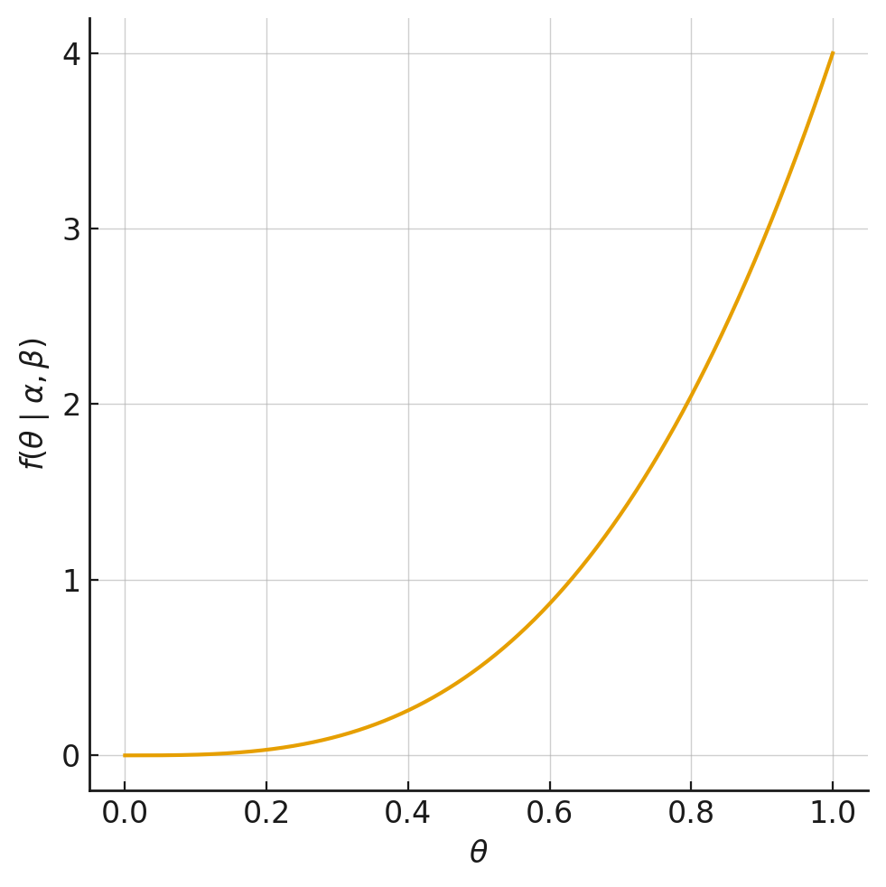
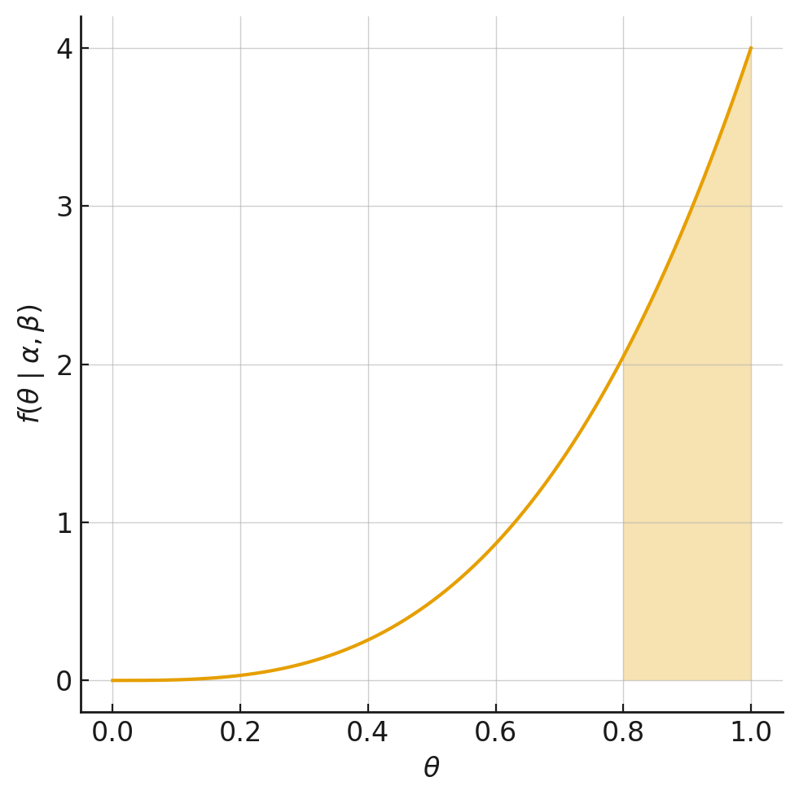

Capítulo 3 Modelos Probabilisticos
3.1 Introducción
En este capítulo se abarcarán problemas con un enfoque probabilístico, esto es, que se asume que los tomadores de decisiones se comportan aleatoriamente. Esto permite abordar una gran cantidad de problemas asociados al Marketing, los cuales se pueden caracterizar en tres tipos de modelos básicos:
Duración: La pregunta clave es ¿Cuándo? Son situaciones ligadas a la duración de una determinada conducta del cliente, como por ejemplo: tiempo de permanencia en una compañía, tiempo de adopción de un cierto producto innovador, entre otros. Puede ser con tiempo continuo, o discreto.
Conteo: La pregunta clave es ¿Cuántos? Son situaciones ligadas al estudio de llegadas de clientes y contabilización de una determinada conducta, como por ejemplo: número de visitas a un portal web y la cantidad de productos comprados en una tienda de retail.
Elección: La pregunta clave es ¿Cuál? Son situaciones asociadas a las decisiones de elección de un determinado cliente, como por ejemplo: clientes que eligen responder (o no) a una campaña publicitaria y la elección de cambiar (o no) de canal de televisión.
Cada uno se estos modelos tiene muchas aplicaciones dentro de diversas situaciones en la vida real. Comportamientos más complejos pueden ser descritos usando combinaciones de los modelos básicos.
3.2 Metodología
Dicho enfoque posee una metodología de modelamiento sugerida, que comparten los modelos vistos a lo largo del curso.
La metodología consiste en:
Determinar el problema de decisión a estudiar y la información requerida.
Identificar el comportamiento observable (heterogeneidad) de interés a nivel individual. Típicamente, se denota con una \(x_i\).
Seleccionar la distribución de probabilidad que caracterice el comportamiento individual. Se consideran los parámetros de esta distribución, como características latentes a nivel individual. Típicamente, se denota con \(f(x|\theta)\).
Escoger la distribución que caracterice cómo las características latentes están distribuidas en la población. Se le llama distribución mixta o heterogénea. Típicamente, se denota con \(g(\theta)\)
Derivar la distribución agregada, o distribución observable, del comportamiento de interés.
\[ f(x) = \int f(x|\theta)\, g(\theta)\, d\theta \quad \tag{3.1} \]
\[ p(x) = \sum_{i} f(x|\theta)\, Pr(\theta = \theta_{i}) \quad \tag{3.2} \]
Estimar los parámetros del modelo (de la distribución mixta), mediante el ajuste de la distribución agregada a los datos observados.
Usar los resultados para tomar una decisión sobre el problema de marketing en cuestión.
3.3 Problemas Teóricos
3.3.1 E1: Tasa de respuesta
Una compañía de venta de ropa por catálogo busca decidir a que segmento enviar los catálogos de la próxima colección. Para ello analiza la tasa de respuesta de una muestra de clientes de cada segmento (esto es el ratio entre número de clientes que compra y número de catálogos enviados). Al mirar el primer segmento observa que de los 18 clientes a quienes se les envió el catálogo, ninguno compró y por tanto decide no enviar catálogos a ningún cliente de ese segmento. Esta compañía:
- Muy probablemente esté subestimando la tasa de respuesta de ese segmento.
- Debiera redefinir los criterios de segmentación para hacer grupos más grandes y accionables.
- Ha definido una política que da cuenta de su aversión al riesgo.
- Debiera usar un modelo de duración en tiempo continuo con dependencia en la duración.
- Debiera incorporar variables explicativas en su modelo predictivo.
3.3.2 E2: Distribución Weibull
En relación a la distribución Weibull:
- Es un caso particular de la Poisson.
- Es una generalización de la Poisson.
- Sólo tiene un parámetro \(c\).
- Es muy flexible y permite incluso generar distribuciones bimodales.
- Ninguna de las anteriores.
3.3.3 E3: Distribución Gamma y Heterogeneidad
¿Cuál de los siguientes factores motivan la utilización de una distribución Gamma para modelar la heterogeneidad de las tasas de adopción en un modelo de duración en tiempo continuo? (Puede elegir más de un factor).
- Consistencia con el dominio de la probabilidad de abandono en cada período.
- Para generar una fórmula recursiva de fácil implementación.
- Flexibilidad para acomodar distintas formas de la distribución.
- Para generar una fórmula cerrada que pueda ser calculada de manera computacionalmente eficiente.
3.3.4 E4: Modelos de Duración
¿Cuáles de los siguientes modelos NO describe la duración de la relación de los clientes con una firma?
- Beta-geométrica desplazada.
- Beta-geométrica NBD.
- Gamma-Weibull.
- Binomial Negativa.
- Ninguna de las anteriores.
3.3.5 E5: Modelo NBD
Un modelo NBD describe la demanda de botellas de oporto en los últimos 6 meses. Si con este modelo se estima la demanda del próximo mes:
- Hay que hacer un modelo de regresión que considere la dinámica del problema.
- El cálculo no se puede hacer directamente, sin embargo podemos recalibrar el modelo considerando un horizonte de un mes.
- El histograma del número de botellas consumidas por cliente se moverá a la izquierda.
- La probabilidad de comprar \(x\) botellas resulta ser simplemente 1/6 veces las probabilidades calculadas para el primer semestre.
- Ninguna de las anteriores.
3.3.6 E6: Modelos de Conteo
Un analista propone el uso de modelos de conteo para describir la intensidad de la participación de los usuarios de la red social X. Los parámetros que describen el comportamiento de los usuarios han sido estimados usando datos de 4 días de actividad. El modelo ajusta extremadamente bien. Sin embargo, al usar las estimaciones para pronosticar la actividad del quinto día el modelo no ajusta bien. Al respecto, se debiera concluir que:
- Se debe agregar la data para considerar la actividad agregada en todo el horizonte.
- Probablemente el comportamiento de los usuarios en el quinto día esté afectado por factores que no están presentes en los primeros cuatro días.
- Hay que calcular esperanzas condicionales.
- Los supuestos de comportamiento son errados y hay que desechar el modelo.
- Todas las anteriores.
3.3.7 E7: Tiempo discreto en Modelos de Duración
En la práctica, siempre podemos discretizar el tiempo y por lo tanto no hay motivos para usar modelo de duración en tiempo continuo. Discuta respecto de la veracidad de esta afirmación.
- Para eventos con gran variabilidad de tiempos de ocurrencia, un modelo de tiempo discreto podría requerir un número muy grande de periodos para describir el apropiadamente comportamiento bajo estudio.
- Si el comportamiento tiene dependencia en la duración, dichas dependencias son fáciles de incluir en un modelo de tiempo continuo.
Solucionario.
E1: a
E2: e
E3: iii, iv
E4: d
E5: c
E6: b
E7: Tiempo discreto en Modelos de Duración
Correcto. Esto muestra que en fenómenos con tiempos muy dispersos, el modelo discreto se vuelve poco práctico, mientras que el continuo es más parsimonioso.
Correcto. En continuo se pueden modelar directamente con funciones de riesgo (hazard) dependientes del tiempo, lo cual puede ser más complejo de representar en discreto.
3.4 Problemas Aplicados
3.4.1 Problema 1 (Control 2 2025-2)
VTV es una empresa aseguradora, en la que una de sus principales líneas de negocio consiste en la provisión de cobertura de segunda línea para clientes corporativos. En simple, VTV ofrece un seguro de salud que se gatilla cuando ocurre un gasto médico, pero que se activa después de que operen las coberturas obligatorias de Fonasa o Isapre. El servicio se vende a empresas de distintos rubros para que sirvan como beneficio complementario para sus trabajadores.
Recientemente, VTV ha lanzado un nuevo servicio llamado TuBienestar. Este servicio ofrece que los empleados de las empresas clientes de VTV puedan acceder a una batería de exámenes preventivos que aspiran a detectar tempranamente problemas de consideración y así reducir los gastos en salud a largo plazo. A continuación, usaremos modelos probabilísticos para tener una primera aproximación del valor del programa TuBienestar. Para eso, haremos uso de la base histórica de gastos que contiene la valorización de todos los eventos de salud, incluyendo consultas médicas, hospitalizaciones, exámenes y compra de medicamentos. Aunque existe información más detallada de cada evento, nos concentraremos en \(n_{ijkt}\), correspondiente al número de eventos de salud en el periodo t del beneficiario i, que pertenece al grupo j de la empresa k. Notar que en esta base, los eventos están agrupados por periodos trimestrales y los beneficiarios de cada empresa están separados por segmento, ya que distintos tipos de empleados podrían acceder a distintos beneficios.
- (2.0 puntos) Actualmente, VTV describe el número de eventos de cada beneficiario usando un modelo de Poisson. En este modelo, como los eventos de salud no son tan frecuentes, una gran proporción de los beneficiarios no registra eventos en un trimestre dado y, por tanto, el caso de cero eventos merece un tratamiento especial. Para modelar los eventos de gasto, se considera que, si hay un evento, el número de eventos se distribuye Poisson, pero que la probabilidad de no observar ningún evento es mayor que la de un modelo de Poisson tradicional. Escriba la log-verosimilitud de este modelo de conteo con ceros inflados. Hint: Le puede resultar útil conceptualizar el modelo pensando que con probabilidad \(\pi\) no hay ningún evento y que con probabilidad \(1-\pi\) el proceso sigue distribución de Poisson standard.
- Suponga ahora que, en vez de describir el número de eventos de cada
beneficiario, nos concentramos en el número de beneficiarios que
registra al menos un evento dentro de cada segmento-compañía. Así,
como alternativa al modelo existente, se postula describir la
ocurrencia de eventos de salud como un modelo de elección binaria.
- (1.0 puntos) Suponiendo que puede haber segmentos con mayor propensión a registrar eventos, escriba la log-verosimilitud de un modelo binomial con dos clases latentes.
- (1.0 puntos) Suponga que ha estimado el modelo y los estimadores máximos verosímiles vienen dados por \((\theta_1, \theta_2, \pi) = (0.1, 0.6, 0.5)\). Considere un segmento con 824 beneficiarios que, transcurrido un trimestre, evidencia 17 eventos de salud. Escriba una expresión para la probabilidad que este segmento corresponda a la clase de mayor propensión a registrar eventos.
Para las descripciones anteriores considere que \(n_{jkt}\) es el número total de beneficiarios que tuvieron algún gasto de salud en el trimestre t dentro del segmento j de la empresa k y que \(m_{jkt}\) es el número total de beneficiarios dentro de ese segmento, empresa y trimestre.
Como último enfoque, se estiman tres versiones de modelos beta-binomiales. En los modelos que se incluye heterogeneidad observable, se consideran variables asociadas tanto a características del segmento como a variables estacionales y de tendencia.
Variable Modelo 1 Modelo 2 Modelo 3 \(\alpha\) 0,127 ** 0,151 ** 0,149 * \(\beta\) 3,503 *** 3,729 *** 3,852 *** Sector:Minería 1,234 *** 1,108 *** Sector:Construcción 2,122 *** 1,432 ** Sector:Salud 1,784 *** 1,665 *** Tamaño-Mediana 0,145 -0,004 Tamaño-Grande 0,372 * 0,401 * AntiguedadContrato 0,188 ** 0,193 ** TuBienestar -0,089 ** Invierno 2,921 *** 2,955 *** Verano -0,539 * -0,564 * Tendencia 0,278 ** 0,305 ** N. Obs 34.825 34.825 34.825 LL -51.771,8 -45.282,1 -41.321,9 AIC 107.543,6 90.580,2 82.665,8 \(\text{Tabla 1. Estimadores máximo verosímiles de dos modelos beta-binomiales con variables explicativas.}\)
- (1.0 puntos) Discuta si el programa TuBienestar ayuda a describir el comportamiento de los beneficiarios y si el programa TuBienestar es bueno para la salud de los beneficiarios.
- (1.0 puntos) En otros mercados el valor esperado de la probabilidad que un beneficiario exhiba un evento de salud en un trimestre dado es 0.16. ¿Cómo testearía si los datos de Chile son distintos a ese valor medio internacional?
Solución
Siguiendo la indicación, la probabilidad de los eventos viene dada por:
\[ \Pr(N_{ijkt} = n \mid \lambda, \pi) = \begin{cases} \pi + (1 - \pi)e^{-\lambda} & n = 0 \\ (1 - \pi) \dfrac{e^{-\lambda}\lambda^n}{n!} & n > 0 \end{cases} \]
Entonces, la función log-verosimilitud viene dada por:
\[ LL = \sum_{i} \sum_{j} \sum_{k} \sum_{t} \left[ 1_{n_{ijkt}=0} \ln\left( \pi + (1 - \pi)e^{-\lambda} \right) + 1_{n_{ijkt}>0} \ln\left( (1 - \pi) \dfrac{e^{-\lambda}\lambda^n}{n!} \right) \right] \]
Sean \(\theta_1\) y \(\theta_2\) las probabilidades de registrar un evento de las clases 1 y 2 respectivamente.
La probabilidad de observar exactamente \(n\) eventos en el segmento de clientes \(j\) de la empresa \(k\) en el trimestre \(t\) viene dada por:
\[ \Pr(n_{jkt} = n \mid \theta_1, \theta_2, \pi) = \pi \binom{m}{n_{jkt}} \theta_1^{n_{jkt}} (1 - \theta_1)^{m - n_{jkt}} + (1 - \pi) \binom{m}{n_{jkt}} \theta_2^{n_{jkt}} (1 - \theta_2)^{m - n_{jkt}} \]Entonces, la log-verosimilitud viene dada por: \[ LL \;=\; \sum_{j}\sum_{k}\sum_{t} \ln\!\Big( \Pr(n_{jkt} \mid \theta_1,\theta_2,\pi) \Big) \]
Aplicamos la fórmula de bayes directamente: \[ \Pr(\lambda=\lambda_2 \mid n_{jkt}=17) = \frac{\Pr(n_{jkt}=17 \mid \lambda=\lambda_2)\,\Pr(\lambda=\lambda_2)} {\Pr(n_{jkt}=17 \mid \lambda=\lambda_1)\,\Pr(\lambda=\lambda_1) + \Pr(n_{jkt}=17 \mid \lambda=\lambda_2)\,\Pr(\lambda=\lambda_2)}. \] Donde: \[ \Pr(n_{jkt}=17 \mid \lambda=\lambda_1) = \binom{824}{17}\,(0.1)^{17}\,(1-0.1)^{824-17}, \] \[ \Pr(n_{jkt}=17 \mid \lambda=\lambda_2) = \binom{824}{17}\,(0.6)^{17}\,(1-0.6)^{824-17}, \] \[ \Pr(\lambda=\lambda_1)=\Pr(\lambda=\lambda_2)=\tfrac{1}{2}. \]
La parte a) requiere mirar los resultados de la tabla. La parte b) puede contestarse independientemente.
El AIC del modelo 2 es mayor que el AIC del modelo 3 que solo agrega la variable tuBienestar, y por tanto, la variable tiene valor explicativo. Se puede argumentar también que el coeficiente mismo de la variable es significativo y por tanto ayuda a explicar.
Respecto al impacto en la salud, como el coeficiente es significativo y negativo, diríamos que aquellos que participan del programa tienen una menor probabilidad de generar eventos y, por tanto, el programa sería beneficioso. Sería deseable discutir que este efecto no es necesariamente causal, pero no lo consideraremos necesario.
Recordar que la esperanza de una \(Beta(\alpha,\beta)\) viene dada por \(\frac{\alpha}{\alpha+\beta}\). Por lo tanto, lo que necesitamos testear es que \(\alpha=0.16(\alpha+\beta)\), que es una restricción lineal que puede testearse usando un test de ratios de verosimilitud.
3.4.2 Problema 2
En el contexto del marketing B2B (Business to Business) para servicios profesionales, las empresas han comenzado a incorporar el marketing de contenidos (Content Marketing, CM) como parte integral de sus estrategias comerciales. Estas iniciativas buscan, principalmente, generar oportunidades de venta (leads) y fidelizar clientes existentes, mediante la entrega de información de valor. El marketing de contenidos puede adoptar múltiples formas, tanto en entornos presenciales como digitales. Las actividades presenciales incluyen eventos cara a cara, como seminarios, conferencias o talleres; mientras que las digitales abarcan webinars, seminarios virtuales y la distribución de contenido a através de plataformas digitales, como los sitios web corporativos.
En los mercados B2B, donde un número reducido de cuentas clave suele concentrar una parte importante de las ventas, la gestión del marketing de contenidos debe articularse cuidadosamente con los procesos tradicionales de vents. Es habitual que estas organizaciones estructuren el proceso de ventas en dos grandes etapas: generación de leads y conversión de leads. Un lead representa una oportunidad de negocio que se manifiesta a través de señales tempranas de interés por parte de una cuenta clave, como una consulta por correo electrónico, una llamada comercial, la solicitud de una cotización o la descarga de un folleto técnico. Un lead se considera convertido cuando se concreta la venta y se formalizan los compromisos de pago.
Un desafío relevante para la gestión analítica del marketing de contenidos consiste en identificar qué tipos de actividaeds -presenciales o digitales- generan un mayor número de leads, cuáles de ellas contribuyen de forma más efectiva a su conversión. Asimismo, se plantea la hipótesis de que el nivel de particiapción (engagement) de los empleados de las cuentas clave podría desempeñar un rol mediador en estos procesos.
En este contexto, Vectorix, una empresa B2B que ofrece servicios profesionales, busca comprender cuáles componentes de su estrategia de marketing de contenidos resultan más efectivos. La empresa sospecha que la participación digital (por ejemplo, en webinars o mediante el consumo de contenido online) tiene un impacto positivo en la generación y conversión de leads. Sin embargo, la efectividad relavita de las actividades presenciales frente a las digitales sigue siendo una incógnita.
Con base a sus registros históricos de actividades de marketing y resultados comerciales, Vectorix se propone desarrollar un análisis cuantitativo que le permita evaluar la efectividad comparada de las distintas acciones de marketing de contenido. El objetivo final es orientar la asignación presupuestaria para los próximos dos trimestres, priorizando aquellas tácticas que maximicen tanto la generación como la conversión de oportunidades comerciales.
Los registros históricos se han condesando en una única base de datos que contiene las siguientes columnas:
Idaccount: identificador de la cuenta clave.
Zone: área geográfica en que se encuentra la sede central de la cuenta clave.
Industry: industria a la que pertenece la cuenta.
Tenure: Número de años transcurridos desde que la empresa comenzó su relación con la cuenta.
Year: año fiscal.
Leads: Número de oportunidades generadas por la cuenta durante el año fiscal correspondiente.
ConvertedLeads: Número de oportunidades cerradas para la cuenta durante el año fiscal correspondiente.
NEventOffline: Número de eventos presenciales en los que partició la cuenta clave durante el año fiscal.
NeventOnline: Número de eventos digitales en los que partició la cuenta clave durante el año fiscal.
NEmployeeAccess: Número de empleados de la cuenta que ha tenido al menos algún acceso o consumo de contenido digital durante el año fiscal.
NAccessMean: Número promedio de accesos y consumos de contenido digital para los empleados de la cuenta que interactúan durante el año fiscal.
Proponga un modelo de conteo (debe definir la variable dependiente utilizando la base de datos disponible, junto a sus índices) para describir el número de oportunidades ganadas mediante un modelo que integre heterogeneidad observable. Escriba la log-verosimilitud del modelo anterior y especifique cuántos parámetros deben estimarse. Si necesita, suponga conocida la cardinalidad de todos los índices del modelo y que hay un año de desfase, por lo que debe considerar el \(t\) anterior. Para la construcción del modelo considere:
- La industria y la zona a la que pertenecen cada cuenta incide en la posibilidad de generar y convertir más o menos oportunidades.
- El tiempo de relación afecta las oportunidades ganadas. El primer año de relación, en general, hay un numero grande de oportunidades, el que cae marcadamente el segundo año para repuntar y mantenerse relativamente estable a partir del tercer año.
- Se espera que la participación en eventos presenciales y digitales tienen un efecto en conversión de oportunidades, pero se hipotetiza que estos dos canales son sustitutos entre sí. Considere que los datos tienen un año de desfase, por lo que debe considerar el período anterior.
- El número total de interacciones de los empleados debiera aumentar las oportunidades convertidas, pero el efecto adicional de cada nueva interacción tiende a ser menor a medida que el número de interacción crece.
- Los procesos de conversión son relativamente lentos, por lo que las oportunidades convertidas dependen principalmente de la actividad del año anterior y no del año en curso. Considere que los datos tienen un año de desfase, por lo que debe considerar el período anterior.
Usando los mismos supuestos del modelo anterior, construya un modelo de elección binaria con heterogeneidad observable para describir el número de oportunidades ganadas. Escriba la log-verosimilitud y especifique cuántos parámetros más deben estimarse con respecto al modelo anterior. ¿Qué ventajas puede tener un modelo de elección binario por sobre no de conteo (aplicado a este problema)? Hint: Si le resulta conveniente en su notación, puede asumir que la tasa del modelo de conteo que captura todas las componentes relevantes del problema se denota \(\lambda_{it}(x_{it})\), con \(x_{it}\) un conjunto de variables observables de la cuenta \(i\) en el año \(t\).
Considerando que, quizás, la heterogeneidad observable no es suficiente para capturar toda la variabilidad del fenómeno, se consideró extender el modelo para incluir heterogeneidad no observable. Aunque en este nuevo modelo el conjunto de variables explicativas es algo distinto al del modelo sin heterogeneidad no observable, el ajuste en términos de la log-verosimilitud es bastante mejor, como indica la ??.
Log-verosimilitud modelos alternativos. {#tbl:loglik} Modelo Log-Likelihood Regresión Binomial -10.145,0 Regresión Beta-Binomial -9.855,4 En relación al modelo binomial, ¿cuántos parámetros debiera tener el modelo de regresión beta-binomial para que sea preferido en términos de AIC?
Solución
De acuerdo a las solicitudes:
Necesitamos incluir dummies para zonas (\(\text{Zone}_{ih_1}\)) y para industrias (\(\text{Industry}_{ih_2}\)), donde \(h_1\) corresponde a una zona existente de la base de datos, al igual que \(h_2\), que corresponde a una industria existente.
Se pueden generar dos variables para los niveles de antigüedad (porque una de las tres debe ser la de referencia). Se genera \(\text{Tenure2}_{it}\), que es equivalente a \(\text{Tenure}_{it}\mathbf{1}\begin{cases} 1 & \text{si } t = 2 \\ 0 & \text{en otro caso} \end{cases}\) y \(\text{Tenure3}_{it}\), equivalente a \(\text{Tenure}_{it}\mathbf{1}\begin{cases} 1 & \text{si } t \geq 3 \\ 0 & \text{en otro caso} \end{cases}\).
Hay que incluir el número de eventos físicos, digitales y su interacción.
El número total de interacciones es la multiplicación del número de empleados por el promedio de interacciones por usuario. Dado los rendimientos decrecientes, se debe transformar la variable a logaritmo.
\[ \begin{aligned} \lambda_{it} &= \big(\sum_{h_1} \alpha_{h_1} \text{Zone}_{ih_1}\big) + \big(\sum_{h_2} \alpha_{h_2} \text{Industry}_{ih_2}\big) + \beta_1 Tenure2_{it} + \beta_2 Tenure3_{it} \\ &+ \beta_3 NEventOnline_{it-1} + \beta_4 NEventOffline_{it-1} \\ &+ \beta_5 NEventOnline_{it-1} NEventOffline_{it-1} \\ &+ \beta_6 ln\big(NEmployeeAccess_{it-1} NAccessMean_{it-1}\big) \end{aligned} \]
Este modelo tiene \(Z+I+6\) parámetros a estimar, donde \(Z = \sum_{h_1}\) e \(I = \sum_{h_2}\).
La log-verosimilitud resulta de aplicar una distribución de Poisson:
\[ LL = \sum_{i}\sum_{t} n_{it} \ln\left(\frac{(\lambda_{it}t)^{x_{it}}e^{\lambda_{it}t}}{x_{it}!}\right) \]
Donde \(x_{it}\) es el número de oportunidades convertidas por la cuenta \(i\) en el año \(t\) y \(n_{it}\) es el número de individuos que tuvieron esas \(x_{it}\) oportunidades convertidas. Acá la heterogeneidad observada fue incluida en la regresión de Poisson descrita.
El modelo es idéntico al anterior, pero en vez de describir la verosimilitud como un modelo de Poisson, ahora es un modelo binomial. Entonces:
\[ LL = \sum_{i}\sum_{t} {m_{it} \choose n_{it}} p_{it}^{n_{it}}(1-p_{it})^{m_{it}-n_{it}} \]
Aquí, \(m_{it}\) es el número de leads generados por la cuenta en el año y la probabilidad de conversión heterogenea viene dada por
\[ p_{it} = \frac{e^{\lambda_{it}(x_{it})}}{1+e^{\lambda_{it}(x_{it})}} \]
El cual tiene el mismo número de parámetros que el caso anterior.
Para preferir el modelo beta binomial, el AIC debiera ser menor que el de la regresión binomial. Entonces:
\[ (AIC_B = 2k_B - 2LL_B) > (2k_{BB} - 2LL_{BB} = AIC_{BB}) \]
Despejando y reemplazando los valores, \(k_{BB} - k_{B} < 290\) (es decir, el modelo de regresión beta-binomial podría tener hasta 290 parámetros más y seguiría siendo más preferido que el modelo de regresión de Poisson.
3.4.3 Problema 3
Harcor es una importante firma latinoamericana que se concentra en la producción y venta de caramelos y snacks. Aunque la compañía tiene una estrategia multicanal, gran parte de sus ventas se concentra en el canal tradicional de almacenes y kioscos. Este segmento es muy atomizado con decenas de puntos de venta en el país y con una gran heterogeneidad entre los almaceneros. Mientras algunos almacenes tienen un desarrollo bien establecido con tiendas bien organizadas y sistemas automáticos de registros de venta, otros operan en espacios informales y con malas prácticas de gestión.
Para incentivar las ventas en el canal tradicional, Harcor ha creado un programa de capacitación que ha denominado El Club del Almacenero, que junto con proveer soporte en infraestructura de góndolas y estanterías con las marcas de Harcor, ofrece también un plan de capacitación con las mejores prácticas del comercio minorista, incluyendo temas de publicidad, administración de inventarios, control de costos y planificación de surtido. El plan de capacitación está inicialmente pensado en 4 niveles de módulos, desde el más básico hasta al más avanzado, de modo que para acceder a un nivel debe haberse completado el nivel anterior.
Aunque el nivel de satisfacción de los participantes del programa de capacitación es alto, el porcentaje de almaceneros que participa y completa el programa ha sido más bien bajo en los primeros dos años de operación por lo que Harcor está considerando hacer algunos ajustes al programa. Para que los ajustes sean realizados basados en evidencia, el equipo de analítica comercial se ha propuesto analizar los datos de participación en las ediciones pasadas del programa. Para eso, a partir de los registros históricos se ha generado una tabla, que, junto con un conjunto de variables demográficas de los almaceneros, se registra \(x_{ikt}\) que toma el valor 1 si el almacenero \(i\) participó en el nivel \(k\) en el programa de capacitación realizado en el año \(t\).
Suponga que el número de niveles de los cuales participa un almacenero queda descrito por un modelo beta geométrico desplazado de parámetros \(\alpha\) y \(\beta\).
- (1 punto) Calcule una expresión para la probabilidad que un almacenero termine el programa de capacitación. Notar que la expresión debe poder calcularse a partir de los datos observados \(x_{ikt}\) y los parámetros \(\alpha\) y \(\beta\).
- (1 punto) Escriba la log-verosimilitud del problema. Al igual que en el caso anterior, exprese la log-verosimilitud en términos de \(x_{ikt}\), \(\alpha\) y \(\beta\).
Suponga que se estima el modelo usando el método de la máxima verosimilitud resultando los valores de la Tabla:
Tabla: Resumen de ventas para cada función. Variable Coeficiente \(\alpha\) 0.999 \(\beta\) 4.001 N 1,245 LL -2.583 La Figura reporta la distribución beta evaluada en los estimadores máximos verosímiles de la Tabla. Por inspección de la figura, provea una aproximación numérica a la probabilidad de que un cliente no avance al siguiente nivel sea mayor que 0.8 (usando áreas de triángulos y rectángulos).
Figura: Distribución posterior de la probabilidad de no continuar
Calcule el intervalo de confianza al 95% del segundo parámetro \(\beta\). Considere que el inverso del hessiano de la log-verosimilitud, evaluada en el estimador máximo verosímil, viene dado por \(\Sigma^{-1}\):
\[ \Sigma^{-1} \;=\; \begin{bmatrix} 0.16 & 0.04 \\ 0.04 & 0.36 \end{bmatrix}. \]
Suponga ahora que se rediseña el programa de modo que los contenidos de un módulo son independientes de los otros y, por tanto, un almacenero puede atender cualquier módulo sin necesidad de haber completado los anteriores. Suponga que ya se han desarrollado tres módulos y falta uno por realizar. Escriba la verosimilitud de observar que un almacenero atiende a los tres módulos y otro atiende solo a uno, suponiendo que la asistencia se describe por un modelo beta-binomial.
Si los estimadores máximos verosímiles de la beta binomial son \(\alpha = 3.543\) y \(\beta = 1.231\), escriba una expresión para el valor esperado de la probabilidad que un almacenero atienda al último módulo, si ya atendió a los tres primeros.
Solución
Sea \(D_{it}\) el número de niveles cursado por el almacenero \(i\) en el año de ejecución \(t\) y sea \(s_{ikt}\) una variable binaria que toma el valor 1 si el almacenero cumple el curso \(\,s_{ikt}=\begin{cases} \mathbb{1} & \text{si} \, \sum_h x_{iht} = 4 \\ 0 & \text{en otro caso} \end{cases}\).
La expresión es directa: \[ \Pr(D_{it}=k\mid \alpha,\beta)=\frac{B(\alpha+1,\ \beta+k-1)}{B(\alpha,\beta)} \]
Usando las definiciones de arriba, la log-verosimilitud: \[ LL=\sum_{t}\sum_{i}\sum_{k} s_{ikt}\,\log\!\Big(\mathbb{P}(D_{it}=4\mid \alpha,\beta)\Big) =\sum_{t}\sum_{i}\sum_{k} s_{ikt}\,\log\!\left(\frac{B(\alpha+1,\ \beta+k-1)}{B(\alpha,\beta)}\right) \]
O bien, se puede absorber la suma para cada individuo \(i\) si \(n_{kt}=\sum_i s_{ikt}\), correspondiente al número de almaceneros que cursaron \(k\) niveles. En dicho caso: \[ LL=\sum_{t}\sum_{k} n_{kt}\,\log\!\Big(\mathbb{P}(D_{it}=k\mid \alpha,\beta)\Big) =\sum_{t}\sum_{k} n_{kt}\,\log\!\left(\frac{B(\alpha+1,\ \beta+k-1)}{B(\alpha,\beta)}\right) \]
Para el primer caso:
La probabilidad \(p\) corresponde al área bajo la curva, que puede aproximarse como
\[ p \approx 0.2\cdot 2 + 0.2\cdot 2/2 = 0.6. \]Figura: Distribución posterior con área sombreada
- Usando el inverso del hessiano, el ientervalo de confianza viene dado por \(4.001 \pm 1.96 \sqrt{0.36}\), donde el coeficiente \(\beta\) corresponde la componente \(\Sigma_{22}^{-1}\).
Solo tenemos que multiplicar la probabilidad de los dos eventos:
\[ \begin{aligned} L(\theta) &= \mathbb{P}(D_{it} = 3 \mid \alpha, \beta) \mathbb{P}(D_{it} = 3 \mid \alpha, \beta) \\ &= {3 \choose 3} \frac{\mathbb{B}(\alpha + 3, \beta)}{\mathbb{B}(\alpha, \beta)} \, {3 \choose 1} \frac{\mathbb{B}(\alpha + 1, \beta + 2)}{\mathbb{B}(\alpha, \beta)} \end{aligned} \]
La probabilidad solicitada es simplemente la esperanza condicional del parámetro. En este caso, la distribución condicional de observar tres visitas positivas en tres módulos es \(\mathbb{B}(\alpha + 3, \beta)\). La esperanza condicional de la probabilidad viene dada por
\[\frac{\alpha + 3}{\alpha + \beta + 3} = 0.842\]
3.4.4 Problema 4
En 1972, la National Association of Food Chains (NAFC) impulsó el uso de códigos de barras para administrar los precios en las góndolas de los supermercados en Estados Unidos. Desde aquel entonces, ha existido una continua preocupación respecto a la precisión de estos mecanismos para mantener información precisa respecto de los precios. Uno de los problemas potenciales más relevantes del sistema es que los precios cargados en el sistema podrían no estar bien coordinados con la información de precios desplegada a los clientes en los flejes de las góndolas. En simple, como la información de precios se realiza manualmente, es posible que se generen diferencias entre lo que se despliega de cara al cliente al momento de la elección, con lo que efectivamente se cobra en caja.
Motivados por este problema, se ha decidido investigar la situación actual de la precisión con que se despliegan los precios en la industria supermercadista chilena. Más allá de la existencia de discrepancias, nos interesa investigar la duración de estos eventos en que el precio informado difiere del precio efectivamente cobrado. Para investigar estas preguntas, se ha construido una base de datos que contiene alrededor de 75.000 observaciones de precios realizadas durante 28 días en una sala de supermercado de la Región Metropolitana, que considera tanto el precio registrado en el sistema de cajas como el precio exhibido en góndola. Mientras que los precios de cajas se obtienen directamente de los sistemas transaccionales de la compañía, los precios en góndola resultan de una inspección visual en sala, por un equipo de revisores entrenados para ese propósito. La medición visual se hace sobre una lista predefinida de productos sobre los que se registra el precio exhibido.
Habiendo realizado la medición, se identifica que más de un 10% de los precios registrados tiene asociada alguna discrepancia, es decir, que el precio cobrado en caja no coincide con el precio exhibido en el fleje de la góndola. Notar que las discrepancias pueden ser favorables para el cliente o favorables para el supermercado. Por convención, llamaremos discrepancias de tipo I a aquellas que favorecen al cliente y de tipo II a las que favorecen al supermercado. Para entender con más detalle este fenómeno de discrepancias, se ha seleccionado una base con todos los registros con precios discrepantes. En esta base, cada fila se compone de las siguientes variables:
- Id: Identificador de un evento de discrepancia de precios.
- Day: Día de la semana que se registra la discrepancia (con lunes = 1 y domingo = 7).
- Type: Variable categórica con el tipo de discrepancia (Tipo I o Tipo II).
- Section: Categoría del supermercado a la que pertenece el producto que presenta un diferencial (Abarrotes, Limpieza, Bebidas, Galletas y Cocktail).
- Duration: Número de días que dura la discrepancia de precios entre el fleje y el sistema transaccional.
- Tag_price: Precio que aparece en el fleje.
- Real_price: Precio cobrado en caja.
- diff: Diferencia entre precio fleje y precio real.
Para ilustrar la estructura de la base, las primeras entradas se presentan en la Tabla 1:
| Id | Day | Type | Section | Duration | Tag_price | Real_price | diff |
|---|---|---|---|---|---|---|---|
| 1 | 1 | I | limpieza | 1 | 1668 | 1467 | 201 |
| 2 | 1 | II | abarrotes | 7 | 1162 | 9183 | -8021 |
| 3 | 2 | I | bebidas | 1 | 7517 | 6616 | 901 |
| 4 | 1 | I | bebidas | 1 | 1319 | 1160 | 158 |
| 5 | 5 | I | galletas | 3 | 1411 | 1241 | 169 |
| 6 | 3 | II | galletas | 2 | 1411 | 1641 | -231 |
\[ \text{Tabla: Muestra de los primeros 6 registros de la base de discrepancias} \]
Describa un modelo de duración probabilístico que permita describir cuántos días se mantienen las discrepancias y escriba la log-verosimilitud correspondiente. Defina cuidadosamente las variables de la función, especificando qué es parámetro y qué es dato. Para los datos, indique cómo se obtienen de los datos ilustrados en la Tabla 1.
Suponga que complementario a los modelos de duración, se estiman dos modelos de regresión lineal para describir la duración de las discrepancias como variable dependiente. Los resultados de estos dos modelos se reportan en la Tabla 2.
Variable Coef. M1 p-valor M1 Coef. M2 p-valor M2 intercepto 3.55 0.0901 -1.353 0.1607 diff -0.0002 0.7830 – – log(Tag_price) -0.2688 0.3661 – – log(diff) – – 0.563 0.0019 type.I 1.51 0.0210 2.168 0.0000 type.I:diff 0.0046 0.1165 – – day.1 – – -1.013 0.0061 section.limpieza – – 4.394 0.0000 section.cocktail – – -1.329 0.0221 R² 0.096 0.136 Adj. R² 0.086 0.120 \[ \text{Tabla: Resultados de dos modelos de regresión lineal para la duración de la discrepancia.} \]
Más allá de la varianza explicada por cada modelo, ¿qué modelo le parece más adecuado? Provea al menos dos razones por las cuales prefiere el modelo elegido.
Suponga que ahora se estiman tres modelos para describir la duración de discrepancias tipo I (aquellas que favorecen al cliente): un modelo geométrico desplazado sin heterogeneidad, un modelo beta-geométrico desplazado y un modelo de regresión geométrico desplazado en que el parámetro del modelo se asume dependiendo de la magnitud de la discrepancia (\(\text{Diff}\)) y si corresponde a la categoría de limpieza. Para garantizar que el parámetro \(\theta\) esté en el rango \([0,1]\) para incluir variables explicativas se aplica la transformación \[ \theta_i \;=\; \frac{\exp(\beta\cdot x_i)}{1+\exp(\beta\cdot x_i)}. \] Los estimadores máximo-verosímiles se muestran a continuación. Elija dos de los modelos y, para cada uno, calcule la probabilidad de que una discrepancia para un producto de limpieza, cuya diferencia de precios es 201, dure más de 3 días (deje la expresión simbólica; no es necesario valor numérico).
Parámetros Geométrico desplazado Beta geométrico Regresión geométrica \(\theta_0\) 0.33 – 0.46 \(\alpha\) – 2.08 – \(\beta\) – 2.62 – Diff – – -0.43 limpieza – – -0.87 LL -788 -761 -566 AIC 1278 1526 1142 \[ \text{Tabla: Estimadores y criterios de información de tres modelos de duración.} \]
Solución
Dado que la duración la observamos en días, parece más natural considerar un modelo de duración en tiempo discreto (la muestra de datos también sugiere que el proceso podría ser bastante discreto). Sea:
- \(\theta\) = Probabilidad de que un producto deje de estar en discrepancia en un día dado.
- \(T_i\) = la duración de la discrepancia de la observación \(i\).
- \(\tau\) = el máximo período de observación (28 días).
- \(n_t\) = el número de casos en que observamos que la discrepancia dura \(t\) días.
Entonces, la log-verosimilitud viene dada por:
\[ LL \;=\; n_{\tau}\,\ln\!\big((1-\theta)^{\tau}\big)\;+\;\sum_{t=1}^{\tau-1} n_t\,\ln\!\big((1-\theta)^{t-1}\,\theta\big) \]
Acá, \(\theta\) es el único parámetro del modelo. Los datos son \(n_t\) y \(n_{\tau}\) y se obtienen directamente a través de un conteo condicional en los valores de la columna Duration.
Hay varias consideraciones que sugieren que el Modelo 2 podría ser preferible.
diffno es significativo en modelo 1, perolog(diff)sí lo es en modelo 2.- El p-valor del tipo es menor en el modelo 2.
- La interacción que agrega el modelo 1 (
type.I × diff) no es significativa. - Las variables adicionales del modelo 2 sí son significativas.
Las expresiones se derivan directamente de las definiciones y vienen dadas por:
Geométrica: \(\Pr(T>3\mid \theta_0)=(1-0.33)^3\).
Beta-Geométrica: \[ \Pr(T>3\mid \alpha,\beta)\;=\;\frac{B(2.08,\;2.62+3)}{B(2.08,\;2.62)}. \]
Regresión Geométrica: \[ \Pr(T>3\mid \theta_0,\theta_{\text{Diff}},\theta_{\text{lim}})\;=\;\left(\frac{1}{1+\exp(0.46+0.43\cdot 201+0.87)}\right)^{3}. \]
3.4.5 Problema 5
Se acerca el verano (sí, hay que usar la imaginación) y tu última práctica profesional. Como has sido una estudiante excepcional, pudiste elegir con cuidado dónde realizarla y después de descartar varias ofertas, decidiste aceptar la oferta de NotComida, una startup chilena exitosa que basa su propuesta de valor en el diseño y manufactura de productos alimenticios basados en plantas que funcionan como sucedáneos cercanos a otros productos de origen animal, como la leche, el helado o las hamburguesas. Cada vez que te piensas en lo que viene, se te escapa un suspiro de satisfacción. Piensas en lo terrible que sería para ti trabajar en una compañía que no esté alineada con tus ideales. A fin de cuentas, entraste a estudiar ingeniería para cambiar el mundo. Para ti este es solo el primer paso.
Todavía quedan dos semanas para que empiece la práctica, pero ya estás ansiosa, por lo que recibes con entusiasmo y sorpresa un correo electrónico de Kiara, quien será tu supervisora directa durante tu estadía en la compañía. "¡Hola! Esperando que estés muy bien, te escribo para contarte los próximos desafíos en los que vamos a estar trabajando en el equipo en los próximos seis meses. Por supuesto que no es necesario que hagas absolutamente nada, pero como queremos que te sientas integrada te vamos a ir copiando en las comunicaciones internas del equipo". Antes de cerrar el mensaje, te das el tiempo de darle un vistazo rápido al diccionario de datos que viene adjunto:
| Variable | Descripción | Media |
|---|---|---|
| IdCliente | Identificador de cliente | - |
| Mes | Mes {enero, febrero, …, diciembre} | - |
| Año | Año | - |
| Categoría | Categoría de producto {Hamburguesas, Leche, Helados} | - |
| Tienda | Identificador de la tienda dónde se realizó la compra | - |
| Edad | Edad del panelista | 31.3 |
| Mujer | 1 si la panelista se identifica como mujer | 0.51 |
| Ingreso | Ingreso mensual declarado por el panelista [millones CLP] | 0.56 |
| Zona Oriente | 1 si el panelista vive en la zona oriente de Santiago | 0.11 |
| NCompras | Número de compras en esa categoría y mes | 2.34 |
\[ \text{Tabla 1: Diccionario de datos del panel (variables y media cuando corresponde).} \]
Tienes súper claro que, de verdad, no tienes que hacer nada. Sin embargo, te dan unas ganas enormes de empezar ya a pensar en cómo puedes contribuir. El equipo se ha embarcado en una serie de proyectos para entender el comportamiento de compra de los clientes y tú sabes que tienes las herramientas para hacer una contribución. Aunque no estás tan segura de en qué subproyecto te quieres involucrar, ya has delineado un plan bastante claro de lo que te gustaría hacer. Considerando que la fuente de datos principal es un panel de compras con el número de unidades y montos comprados por cliente, se te ocurre que tu primer modelo puede estar basado en un modelo de conteo.
Proponga un modelo de regresión de Poisson en que la tasa de compra depende de cada individuo, categoría, tienda y semana. Escriba la log-verosimilitud del problema considerando que \(n_{icst}\) es el número de unidades compradas por el cliente \(i\) en la categoría \(c\) en la tienda \(s\) el mes \(t\). Para esto considere que:
- Existe un efecto fijo por categoría y uno por tienda.
- El género induce diferencias relevantes en las ventas y el efecto del género es distinto para la zona oriente de la capital.
- Existe una tendencia creciente en las ventas. Como el crecimiento es relativamente pequeño, puede modelarse con un efecto fijo a nivel de año.
- Aunque en el consumo es relativamente constante a lo largo del año, hay dos categorías que presentan una estacionalidad relevante. Mientras los helados tienen un patrón marcadamente diferente en los meses de diciembre, enero y febrero, las hamburguesas declinan sus ventas en el mes de septiembre.
La investigación exploratoria de los datos sugiere que, restringiendo el análisis a la categoría \(c=\) Hamburguesas, podría haber dos clases latentes. Un segmento de alto consumo y otro de consumo más bien ocasional. Para acomodar esta regularidad se propone un modelo sencillo en que la tasa de compra de un cliente \(i\), independiente del mes, viene dado por:
\[ \log(\lambda_i) \;=\; \beta_{0i} + \beta_1 \text{MUJER}_i \]Donde \(\beta_{0i}\) toma el valor \(-1\) con probabilidad \(0.4\) y el valor \(0.5\) con probabilidad \(0.6\). ¿Cuál es la probabilidad de que un cliente hombre, con MM$1 de ingreso que no compra en un mes (\(n_i=1\)) pertenezca al segmento 1? Deje computada la probabilidad.
Después de revisar los resultados de los modelos anteriores, te preguntas si dado el bajo número de compras registrados cada mes, quizás podría existir un modelo alternativo que pudiera complementar los aprendizajes anteriores. Rápidamente se te ocurre que quizás puedes definir una variable \(y_{icst}\) que toma el valor 1 si el cliente \(i\) compra en la categoría \(c\) en la tienda \(s\) el mes \(t\) (sí o no). Con esto, te resulta evidente que puedes estimar un modelo de elección discreta que describa la decisión de comprar o no de los clientes de la base.
Considerando los datos de la Tabla 2, que describen todas las compras observadas por el cliente 321045, escriba la log-verosimilitud del historial de compra de este cliente.
IdCliente Mes Año Tienda Categoría Edad Mujer Ingresos Zona Oriente Ncompras 321045 Julio 2021 S816 Hamburguesa 26 0 1.3 0 1 321045 Septiembre 2021 S816 Hamburguesa 26 0 1.3 0 0 \[ \text{Tabla 2: Historial resumido de compras del cliente 321045.} \]
Solución
En un modelo de regresión de Poisson, la distribución ya viene dada y solo tenemos que especificar la tasa del proceso. Sea \(\lambda_{icst}\) la tasa de compras del cliente \(i\) en la categoría \(c\) en la tienda \(s\) el mes \(t\). Además, definamos:
- \(\delta_{ta}=1\) si el mes \(t\) pertenece al año \(a\).
- \(\Delta^{1}_{ct}=1\) si \(c=\text{Helado}\) y \(t\in\{\text{diciembre, enero, febrero}\}\).
- \(\Delta^{2}_{ct}=1\) si \(c=\text{Hamburguesa}\) y \(t=\text{septiembre}\).
Entonces, la tasa de compra puede escribirse como \[ \lambda_{icst} = \alpha_c + \alpha_s + \beta_1\,\text{MUJER}_i + \beta_2\,\text{MUJER}_i\cdot \text{ZORIENTE}_s + \sum_a \gamma_a\,\delta_{ta} + \theta_1\,\Delta^{1}_{ct} + \theta_2\,\Delta^{2}_{ct}. \]
Tanto \(\Delta^{1}_{ct}=1\) como \(\Delta^{2}_{ct}=1\) pueden ser obtenidos usando una interacción entre Categoría, Tiempo y una indicatriz, que indique \(\mathbb{1}\) cuando \(t\) pertenece al mes indicado, y \(0\) en caso contrario.
Con esto, la log-verosimilitud viene dada por: \[ LL = \sum_{i,c,s,t}\ln\big(\Pr(N_{icst}=n_{icst})\big) = \sum_{i,c,s,t}\ln\!\left(\frac{\lambda_{icst}^{\,n_{icst}}\,e^{-\lambda_{icst}}}{n_{icst}!}\right). \]
Las tasas de compra de los dos segmentos vienen dadas por:
\[ log(\lambda_{i1}) = -1 + \beta_1 \text{MUJER}_i = -1 + 0 \implies \lambda_{i1} = e^{-1} \]
\[ log(\lambda_{i2}) = 0.5 + \beta_1 \text{MUJER}_i = 0.5 + 0 \implies \lambda_{i1} = e^{-0.5} \]
Por tanto, la probabilidad de comprar una vez en cada segmento es:
\[ \mathbb{P}(n_i = 1 \mid s_1) = \lambda_{i1} e^{-\lambda_{i1}} = e^{-1}e^{-e^{-1}} \]
\[ \mathbb{P}(n_i = 0 \mid s_2) = \lambda_{i2} e^{-\lambda_{i2}} = e^{-0.5}e^{-e^{-0.5}} \]
Aplicando Teorema de Bayes:
\[ \mathbb{P}(s_1 \mid n_i = 1) = \frac{\mathbb{P}(n_i = 0 \mid s_1)\mathbb{P}(s_1)}{\mathbb{P}(s_1 \mid n_i = 0) \mathbb{P}(s_1) + \mathbb{P}(s_2 \mid n_i = 0) \mathbb{P}(s_2)} \]
Donde \(\mathbb{P}(s_1) \;=\; 0.4\) y \(\mathbb{P}(s_2) \;=\; 0.6\).
La utilidad que deriva el cliente \(i\) por comprar en la categoría \(c\) en la tienda \(s\) en el mes \(t\) viene dado por:
\[ u_{icst} = \alpha_c + \alpha_c + (\beta_1 \text{MUJER}_i = 0) + (\beta_2 \text{MUJER}_i \text{ZORIENTE}_s = 0) + \sum_{a} \gamma_a \delta_{ta} + (\theta_1 \Delta_{ct}^1 = 0)+ \theta_2 \Delta_{ct}^2 \]
Donde \(\text{MUJER}_i \;=\; 0\) porque el registro es de un hombre, y \(\theta_1 \Delta_{ct}^1 = 0\) porque aplica para helado y en los meses de verano, no septiembre y hamburguesa. Con esto, la log verosimilitud es:
\[ LL(\hat{\theta}) = \sum_{icst} y_{icst} ln\left(\frac{e^{u_{icst}}}{1+e^{u_{icst}}}\right) + (1-y_{icst})ln\left(\frac{1}{1+e^{u_{icst}}}\right) \]
3.4.6 Problema 6
En los últimos 20 años, hemos visto un crecimiento explosivo en el uso de redes sociales, con más de 4.4 billones de usuarios a nivel mundial y con un promedio de más de 8 cuentas por usuario en las distintas plataformas que han surgido en los últimos años. En este ecosistema, hay un creciente interés por convertirse en creador de contenido, que les permita generar audiencia que pueda eventualmente ser monetizada. Cualquier persona con un dispositivo móvil puede crear contenido que potencialmente puede volverse viral y captar niveles importantes de atención de los usuarios. Ya sea tocando la guitarra y cantando, jugando videojuegos o mostrando la ejecución de sofisticadas recetas de cocina, muchos creadores buscan alcanzar altos niveles de visitas y generar interacciones significativas con sus audiencias.
Considerando que existen un alto potencial comercial en la industria de generación de contenido, se ha propuesto investigar en profundidad cuáles son los factores que inciden en el nivel de interacciones entre creadores y usuarios. Para estos efectos, se ha aliado con un nuevo portal en que creadores de contenido pueden subir su material, el que es exhibido a los usuarios de la plataforma usando un algoritmo interno que personaliza el contenido de acuerdo con la probabilidad de generar interacciones. Aunque hay varios niveles de interacción con el contenido (ver, comentar, compartir), la plataforma considera que el número de me gusta es la principal métrica para capturar el éxito relativo de una publicación.
El portal tiene un módulo de analítica de datos que permite recolectar algunas métricas claves de cada uno de los contenidos publicados en su primer año de operación para todos los creadores registrados en el portal. Entre los datos disponibles se encuentran las llaves para identificar cada contenido y algunas características como la categoría del contenido (información, humor o noticia), el número de caracteres, el número de imágenes y la duración del video, si existiese. Adicionalmente, y gracias a una alianza con una herramienta de inteligencia artificial, se cuenta con el puntaje de cada contenido en tres dimensiones distintos: producción, contenido y novedad.
| Variable | Descripción | Media |
|---|---|---|
| IdCC | Identificador de cliente | - |
| IdPost | Identificador del contenido | - |
| DatePost | Fecha de publicación del contenido | - |
| Category | Categoría de producto {Information, Humour, News} | - |
| Nchar | Número de caracteres en el texto del contenido publicado | 84.4 |
| Npic | Número de fotos en el contenido publicado | 0.4 |
| Tvid | Duración [seg] de los videos que acompañan el contenido | 18.5 |
| AIproduction | AI score en la calidad de la producción [0,1] | 0.5 |
| AIcontent | AI score en la calidad del contenido [0,1] | 0.3 |
| AInovelty | AI score en la novedad del contenido [0,1] | 0.2 |
| Nlikes | Número de me gusta que ha recibido la publicación | 12.5 |
\[ \text{Tabla 1: Descripción base de contenidos en la plataforma de creadores.} \]
Modele el número de me gusta que recibe una publicación como un proceso de conteo con heterogeneidad observable. Para este modelo:
- Justifique la inclusión de al menos dos variables explicativas indicando cuál es el signo esperado del coeficiente correspondiente.
- Escriba la log-verosimilitud del problema. Indique cuáles son los parámetros para estimar y explicite cuántos parámetros tiene su modelo.
- Suponiendo que ha estimado el modelo y los parámetros proveen una buena descripción de la distribución del número de me gusta que recibirá un post. Usando dichos estimadores, escriba una expresión para la probabilidad de que un cliente reciba al menos un me gusta.
Una de las limitaciones del modelo anterior es que el uso del algoritmo interno de la plataforma implica una distribución muy heterogénea de exposiciones. Esto es, algunas publicaciones son desplegadas miles de veces, mientras que otras reciben muy poca exposición. Para hacer frente a este problema, se propone usar un modelo de elección.
- Describa el proceso como un proceso de elección binaria con heterogeneidad no observable y escriba la log-verosimilitud del problema. Para eso, suponga que la base de datos también contiene una variable \(Ndisp\) que, para cada post, indica el número de veces que fue expuesto.
- Si al estimar el modelo, se encuentra que \(\alpha=1\) y \(\beta=2\) son los estimadores máximo-verosímiles. En promedio, ¿con qué probabilidad a un cliente le gusta una publicación en la plataforma?
- Considere una publicación que ha sido desplegada 100 veces y ha recibido 10 me gusta. Considerando los valores de \((\alpha,\beta)=(1,2)\), de la parte anterior, ¿cuántos me gusta esperaría observar luego de mostrar el contenido 200 veces?
Solución
Se tiene:
Cualquiera de las variables listadas puede justificarse de manera más o menos directa:
Efecto fijo por creador: hay creadores más populares que otros.
Efecto fijo por fecha: hay fechas en que los usuarios son más activos.
Dummies por categoría: hay categorías que pueden generar más me gusta.
Nchar: textos más largos o más cortos pueden ser más atractivos.
Npic: agregar más fotos puede ser más atractivo.
Tvid: videos más largos o más cortos pueden ser preferidos.
AIproduction: material mejor producido puede generar más me gusta.
AIcontent: contenido de mejor calidad puede generar más me gusta.
AInovelty: material más novedoso puede generar más me gusta.
Aunque cualquier combinación de las variables arriba descritas es admisible, para efectos ilustrativos consideraremos un modelo en que la tasa de me gusta del contenido \(i\) viene dada por: \[ \lambda_i \;=\; \lambda_0 \cdot \exp\!\big(\beta_1\,\text{Nchar}_i + \beta_2\,\text{Npic}_i + \beta_3\,\text{Tvid}_i\big). \] Con esto, la log-verosimilitud viene dada por: \[ LL \;=\; \sum_i \ln\!\left(\frac{\lambda_i^{\,\text{Nlikes}_i}\,e^{-\lambda_i}}{\text{Nlikes}_i!}\right). \]
La probabilidad de recibir al menos un me gusta viene dada por: \[ \Pr(\text{Nlikes}_i > 0 \mid \lambda_0,\boldsymbol{\beta}) \;=\; 1 - \Pr(\text{Nlikes}_i = 0 \mid \lambda_0,\boldsymbol{\beta}) \;=\; 1 - e^{-\lambda_i}. \]
El modelo es una beta-binomial estándar. Recordar que la esperanza de una \(\text{Beta}(\alpha,\beta)\) es \(\alpha/(\alpha+\beta)\).
La log-verosimilitud de una beta-binomial: \[ LL \;=\; \sum_i \ln\!\left( \binom{\text{NDisp}_i}{\text{Nlikes}_i}\; \frac{B\!\big(\alpha + \text{Nlikes}_i,\; \beta + \text{NDisp}_i - \text{Nlikes}_i\big)}{B(\alpha,\beta)} \right). \]
\[ \mathbb{E}(\theta \mid \alpha,\beta) \;=\; \frac{\alpha}{\alpha+\beta} \;=\; \frac{1}{3}. \]
Se tiene que despejar la esperanza condicional
\[ \mathbb{E}\!\left(\theta_i \mid \alpha,\beta,\text{NDisp}_i,\text{Nlikes}_i\right) =\frac{\alpha+\text{Nlikes}_i}{\alpha+\beta+\text{NDisp}_i} =\frac{11}{103}. \]
Entonces, el número esperado de me gusta al mostrar el contenido 200 veces es:\[ 200 \times \frac{11}{103} \approx 21.36. \]
Notar que \(\frac{11}{103}\) es el número esperado de likes de una persona, dada su verosimilitud (información previa) por su comportamiento esperado (distribución beta). Por eso, para 200 personas simplemente se multiplica.
3.4.7 Problema 7
Hippi es una empresa nacional dedicada a la fabricación de productos para alta montaña. La empresa cuenta con una base de datos que registra la compras que sus clientes en cada temporada y busca estudiar el numero de parkas que los clientes comprarán en la temporada. Para esto, se ha formulado un modelo probabilístico donde el comportamiento de los clientes se describe como:
Cada cliente compra un numero de parkas X que sigue una distribución geométrica. Esto es, condicional en el parámetro p de cada cliente, la función de probabilidad esta dada por:
\[ Pr(X = x|p) = p(1-p)^x \]
Los clientes son heterogéneos en su parámetro p el que esta distribuido en la población de acuerdo a una distribución Beta:
\[g(p|\alpha,\beta) = \frac{1}{B(\alpha,\beta)} p^{\alpha - 1}(1-p)^{\beta-1}\]
Se puede mostrar que la distribución del número de compras para un cliente en la población, y su respectiva esperanza están dadas por:
\[Pr(X=x) = \frac{B(\alpha + 1, \beta + x)}{B(\alpha,\beta)} \qquad \mathbb{E}(X) = \frac{\alpha}{\beta - 1}\]
Siguiendo la convención adoptada en el curso, llamamos a este modelo Beta-Geométrico.
Muestre que la penetración de mercado (fracción de clientes que compró al menos una unidad) puede expresarse como \(\frac{\beta}{\alpha+\beta}\).
Para ello considere que la penetración de mercado es del 60 % y que el numero promedio de parkas que compra un cliente (incluyendo aquellos que no compraron) es igual a 2.5. Estime los parámetros del modelo. Hint: Realice un sistema de ecuaciones.
Se desea extender el modelo para que además incluya un segmento de clientes que nunca compra. Para este segmento de clientes, \(Pr(X = 0) = 1\). Sea \(\pi\) la proporción de estos clientes en la población, y \((1-\pi)\) el segmento de clientes que se comporta de acuerdo al modelo Beta-Geométrico descrito anteriormente. Suponga que conoce \(x_i\), el numero de compras hechas por cada cliente i en la base de datos (i = 1, …, n). Deduzca la función de verosimilitud que utilizaría para estimar el modelo.
Solución
Despejando \(p_0\):
\[ \begin{aligned} p_0 &= 1 - \Pr(X=0) \\ &= 1 - \frac{B(\alpha,\beta+1)}{B(\alpha,\beta)} \\ &= 1 - \frac{\Gamma(\alpha)\Gamma(\beta+1)}{\Gamma(\alpha+\beta+1)} \frac{\Gamma(\alpha+\beta)}{\Gamma(\alpha)\Gamma(\beta)} \\ &= 1 - \frac{\beta\,\Gamma(\beta)}{(\alpha+\beta)\,\Gamma(\beta)} \\ &= \frac{\alpha}{\alpha+\beta}. \end{aligned} \]
A partir de la penetración de compra se despeja \(\alpha\):
\[ 0.6=\frac{\beta}{\alpha+\beta}\quad\Rightarrow\quad\beta=0.6(\alpha+\beta)\ \Rightarrow\ 0.4\beta=0.6\alpha\ \Rightarrow\ \alpha=\tfrac{2}{3}\beta \]
Despejando \(\beta\) utilizando el número promedio de parkas comprado por un cliente:
\[ 2.5=\frac{\alpha}{\beta-1} \quad\Rightarrow\quad2.5=\frac{\tfrac{2}{3}\beta}{\beta-1} \Rightarrow\ \tfrac{2}{3}\beta=2.5(\beta-1) \Rightarrow\ \beta=\tfrac{15}{11} \]
Entonces, sustituyendo:
\[ \alpha=\tfrac{2}{3}\beta=\tfrac{2}{3}\cdot\tfrac{15}{11}=\tfrac{10}{11} \]
Sea \(n_x\) el número de clientes que compra x parkas. Entonces, la verosimilitud puede escribirse como:
\[ L(\alpha,\beta,\pi |x) = \prod_{x=0}^{\infty} \mathbb{P}(X=x|\alpha,\beta,\pi)^{n_x} \]
Donde,
\[ \begin{aligned}Pr(X=x \mid \alpha,\beta,\pi) &= \pi \, Pr(X=x \mid \text{no adopta}) + (1 - \pi)\, Pr(X=x \mid \text{puede adoptar}) \\[6pt]&= \begin{cases}\pi + (1-\pi)\dfrac{B(\alpha+1,\beta)}{B(\alpha,\beta)}, & x=0 \\[10pt](1-\pi)\dfrac{B(\alpha+1,\beta+x)}{B(\alpha,\beta)}, & x>0\end{cases}\end{aligned} \]
3.4.8 Problema 8
Para revitalizar el interés de los usuarios, Pokémon Go está pensando introducir 7 nuevos personajes Pokémon en las comunas de Melipilla, Talagante, Pirque, Colina, Alhue, Paine, Lampa y Buin. Para estudiar el impacto en el atractivo del juego, los desarrolladores han estado realizando pruebas para ver el interés de los jugadores en estos nuevos personajes. Las pruebas se han desarrollado sobre una muestra de jugadores de acuerdo a los números desplegados en la siguietne tabla:
| Pokemon | Melipilla | Talagante | Pirque | Colina | Alhue | Paine | Lampa | Buin | Total |
|---|---|---|---|---|---|---|---|---|---|
| Wigglytuff | 5 | 834 | 504 | 117 | 763 | 424 | 387 | 683 | 3,717 |
| Slowbrow | 24 | 975 | 8 | 342 | 715 | 362 | 788 | 793 | 4,007 |
| Lickitung | 101 | 651 | 200 | 993 | 562 | 614 | 691 | 595 | 4,407 |
| Chansley | 198 | 517 | 960 | 788 | 441 | 844 | 836 | 438 | 5,022 |
| Tangela | 79 | 990 | 756 | 868 | 210 | 944 | 509 | 233 | 4,589 |
| Ditto | 69 | 587 | 96 | 365 | 182 | 634 | 373 | 419 | 2,725 |
| Phanpy | 138 | 969 | 971 | 890 | 586 | 764 | 585 | 361 | 5,264 |
\[ \textbf{Tabla: } \text{Número de veces que un determinado pokemón fue mostrado a un jugador.} \]
Existe dos parámetros relevantes para entender el grado de interacción entre jugadores y personajes. El primer parámetro corresponde a \(q_{k}\) que corresponde a la probabilidad de atrapar a un personaje, condicional de que un jugador intente atraparlo. Aunque esta probabilidad es relevante para saber en qué medida los usuarios aumentan su mazo, el parámetro es ajustado internamente en la plataforma y, por tanto, no hay incertidumbre desde el punto de vista de los usuarios. El segundo parámetro que denominamos como \(p_k\), mide la probabilidad que un usuario intente atrapar un personaje \(k\) si este le aparece disponible en la aplicación móvil. Desde el punto de vista de la jugabilidad es importante disponibilizar personajes que los usuarios quieran atrapar. Para entender el comportamiento de esta intención de atrapar personajes, la tabla siguiente despliega el número de intentos para los personajes y comunas que forman parte del estudio piloto:
| Pokemon | Melipilla | Talagante | Pirque | Colina | Alhue | Paine | Lampa | Buin | Total |
|---|---|---|---|---|---|---|---|---|---|
| Wigglytuff | 0 | 218 | 98 | 39 | 31 | 63 | 26 | 43 | 518 |
| Slowbrow | 8 | 186 | 4 | 110 | 393 | 79 | 240 | 113 | 1,133 |
| Lickitung | 8 | 47 | 13 | 98 | 183 | 180 | 219 | 60 | 808 |
| Chansley | 49 | 31 | 274 | 24 | 48 | 91 | 205 | 42 | 764 |
| Tangela | 14 | 294 | 71 | 35 | 59 | 304 | 116 | 2 | 895 |
| Ditto | 14 | 180 | 14 | 110 | 33 | 84 | 0 | 10 | 445 |
| Phanpy | 4 | 19 | 66 | 189 | 9 | 37 | 92 | 33 | 449 |
\[ \textbf{Tabla: } \text{Número de veces que un jugador intentó atrapar a un determinado pokemón.} \] A partir de los datos presentados:
- Use el método de los momentos para estimar un modelo binomial sin heterogeneidad que caracterice la probabilidad que un usuario intente atrapar a wigglytuff. Hint: Con usar el método de los momentos, se refiere a que el primer momento de una distribución es el valor esperado, donde el valor esperado ed una distribución binomial es \(np\).
- Escriba ahora un modelo que incorpore heterogeneidad para caracterizar la probabilidad que un número de usuarios intente atrapar a un pokemón \(k\) en una comuna \(c\).
- Escriba la log-verosimilitud del modelo anterior, para entender la popularidad de cada uno de los personajes del estudio.
Solución
Definimos una variable aleatoria que signifique lo buscado
\[ X_{w} := \text{\# de usuarios que intentan atrapar a wigglytuf} \]Tenemos un número de experimentos Bernoulli (# de personas a las que se les muestra wigglytuf) y un número de “éxitos” entre estos experimentos (# de personas que intentan atrapar a wigglytuf cuando se les muestra) que ocurren con alguna probabilidad desconocidad \(p_w\) fija, ya que nos piden el caso homogéneo (único valor). Por lo tanto, tenemos que la probabilidad que queremos caracterizar sería de la forma:
\[ P(X_w = x_w) = {n_w \choose x_w} p_{w}^{x_w} (1-p_w)^{n_w - x_w} \]Donde \(n_w\) es la cantidad de personas a las que se les mostró el pokemón (dato en la primera Tabla). Esdecir, \(X_w \thicksim Bin(n_w,p_w)\). Sabemos que el primer momento de una distribución es su media y que la media de una binomial es \(n_w p_W\). Por otro lado, estimamos el valor de la media con algún promedio muestras (con muestras del mismo tamaño) de número de personas que intentaron atrapar a wigglytuf, pero en este caso este número es único, por lo que usamos este valor (total de personas que intentaron atrapar a wigglytuf de la última tabla) que, en este caso, es 518. Por lo tanto, podemos obtener la probabilidad \(p_w\) con la igualdad del primer momento:
\[ 518 = n_w p_w \\ 518 = 3717 p_w \\ p_w \approx 0,1393 \]
Esto tiene mucho sentido, ya que estamos obteniendo la probabilidad de manera empírica con la fracción de personas que intentaron atraparlo y el número de personas a las que se les mostró.
Como debemos considerar heterogeneidad, ahora el parámetro de la distribución que nos intersa, \(p_k\), no lo asumimos como único, sino que sigue una distribución de probabilidad. Como el parámetro es una probabilidad (\(p_k \in [0,1]\)), utilizamos la distribución a priori \(Beta(\alpha_k,\beta_k)\), con \(\alpha_k\) y \(\beta_k\) parámetros a estimar (\(p_k \thicksim Beta(\alpha_k , \beta_k)\), por eso el sub \(k\), ya que cada pokemón tiene un probabilidad \(p_k\) asociada y no tienen porqué seguir la misma distribución). Luego, tenemos que cada comuna nos va a estar aportando en realidad datos sobre la heterogeneidad existente para cada pokemón (sería el equivalente a tener distintas observaciones para distintos individuos). Así, la probabilidad quedaría, para cada pokemón y comuna, con la v.a. anterior, pero segmentando por comuna:
\[ P(X_{k,c} = x_{k,c}) = \int_0^1 P(X_{k,c} = x_{k,c} | p_k)Beta(p_k|\alpha_k, \beta_k) dp_k \\ = \int_0^1 \left( {n_{k,c} \choose x_{k,c}} p_{k}^{x_{k,c}} (1-p_{k})^{n_{k,c} - x_{k,c}}\right) \left(\frac{p_k^{\alpha_k -1} (1-p_k)^{\beta_k -1}}{B(\alpha_k,\beta_k)} \right) dp_k\\ ={n_{k,c} \choose x_{k,c}} \frac{B(\alpha_k + x_{k,c},\beta_k + n_{k,c}- x_{k,c})}{B(\alpha_k,\beta_k)} \]
Nos interesa analizar cada personaje por separado, por lo tanto vamos a tener una expresión de la log-verosimilitud del parámetro \(p_k\) para cada pokemón. Luego, la muestra que tenemos de la v.a. en cuestión para cada pokemón \(k\) es de la forma \(\{ x_{k,1},x_{k,2},...,x_{k,7} \}\), donde el segundo índice es para cada una de las comunas. Sigue que la log-verosimilitud es el logaritmo de la función de verosimilitud con esta muestra para cada pokemón:
\[ \begin{aligned} \ell (p_k | x_{k,1}, ..., x_{k,8}) &= \ln (\mathcal{L}(p_k | x_{k,1}, ..., x_{k,8})) \\ &= \ln(P(X_{k,1}=x_{k,1}, ...,X_{k,8}=x_{k,8} |p_k)) \\ &= \ln \left( \prod_{c=1}^8 P(X_{x,c} = x_{x,c}|p_k) \right) \\ &= \sum_{c=1}^8 \ln(P(X_{k,c}=x_{k,c}|p_k)) \\ &= \sum_{c=1}^8 \ln \left( {n_{k,c} \choose x_{k,c}}\frac{B(\alpha_k + x_{k,c},\beta_k + n_{k,c}- x_{k,c})}{B(\alpha_k,\beta_k)} \right) \end{aligned} \]
Esta es la expresión pedida de la log-verosimilitud para cada pokemón k. En el tercer paso asumimos indepndencia de las v.a. entre columnas y en el último paso reemplazamos por la expresión encontrada en la parte anterior.
3.4.9 Problema 9
Inmersos en la era digital, los consumidores están cada vez conectados en distintos dispositivos los cuales pueden ser usados como canales durante el proceso de compra. En este contexto, algunas empresas han decidido lanzar aplicaciones móviles que funcionan en base a información georreferenciada de los dispositivos de sus clientes, y que permiten enviarles promociones personalizadas cuando identifica que este se encuentra cercano a un punto de venta.
La aplicación que más éxito ha tenido en el mercado, quiere evaluar la efectividad de las campañas que envían a sus usuarios, y así poder ofrecer un mejor servicio a las empresas que lo contratan. Para esto, cuenta con información de los \(m_{i}\) mensajes promocionales que envía al cliente \(i\), y el número \(x_{i}\) de esos que son efectivamente utilizados por el cliente.
Plantee un modelo de elección para determinar la probabilidad de respuesta de cada cliente, en cada ocasión de compra. En particular,
- Escriba la log-verosimilitud del problema.
- Sea \(N\) el número de clientes. Si se observa el comportamiento por \(T\) períodos y en promedio se envían \(M\) promociones por cliente, ¿cuántos parámetros deben estimarse?
Considere que se cuenta con información demográfica de los usuarios de la aplicación móvil, como edad, Ingreso y frecuencia de uso de la app. Reformule el modelo anterior incorporando variables explicativas considerando además que existe un segmento de clientes que realiza pocos canjes y otro que realiza muchos (es decir, un segmento canjeador C y otro no-canjeador N). Hint: Recuerde que si \(x\in\mathbb{R}\), entonces \(\frac{exp(x)}{1+exp(x)}\in(0,1)\).
Suponga que se ha estimado el modelo anterior y se encuentra que los segmento canjeadores y no-canjeadores tienen el mismo tamaño y que los parámetros asociados a las variables explicativas son tales que para un usuario \(i\) con un vector de variables explicativas \(z_{i}\), \(\beta'_{C}x_{i}=ln(2)\) y \(\beta'_{N}x_{i}=ln(1/2)\). Si al usuario le han enviado dos promociones y ha canjeado las dos, ¿cuál es la probabilidad que este usuario pertenezca al segmento de canjeadores?
Suponga ahora que del total de \(m_{i}\) mensajes que recibe un usuario este lee \(n_{i}\) de ellos. De los \(n_{i}\) mensajes que efectivamente lee, decide canjear \(x_{i}\) de ellos. Modele el comportamiento anteriormente descrito como un modelo integrado elección-elección. Plantee explícitamente la probabilidad de canje y la log-verosimilitud del problema.
Solución
Por partes:
- Sea \(X_i\) el número de veces que la persona \(i\) hace efectivo un cupón. La probabilidad de respuesta es \[ \mathbb{P}(X_i=x_i \mid p_i) = \binom{m_i}{x_i}\, p_i^{\,x_i} (1-p_i)^{\,m_i-x_i} \] donde la log-verosimilitud viene dada por \[ LL(p) = \sum_i \ln\!\Big(\binom{m_i}{x_i}\, p_i^{\,x_i} (1-p_i)^{\,m_i-x_i}\Big) \]
- Se deben estimar \(N\) parámetros, uno para cada cliente (lo que sugiere introducir heterogeneidad).
Modelo de elección con dos segmentos. Sea \(p_{iC}\) la probabilidad de canje si \(i\) pertenece al segmento canjeador y \(p_{iN}\) si pertenece al segmento no canjeador. Sea \(\pi\) la fracción de clientes canjeadores. Entonces \[\mathbb{P}(X_i=x_i \mid \beta,\pi) = \pi \binom{m_i}{x_i} p_{iC}^{\,x_i}(1-p_{iC})^{\,m_i-x_i} + (1-\pi) \binom{m_i}{x_i} p_{iN}^{\,x_i}(1-p_{iN})^{\,m_i-x_i}\] donde \[p_{iC} = \frac{\exp(\beta_C' z_i)}{1+\exp(\beta_C' z_i)}, \qquad p_{iN} = \frac{\exp(\beta_N' z_i)}{1+\exp(\beta_N' z_i)}\] y la log-verosimilitud es \[LL = \sum_i \ln\!\Big( \pi \binom{m_i}{x_i} p_{iC}^{\,x_i}(1-p_{iC})^{\,m_i-x_i} + (1-\pi) \binom{m_i}{x_i} p_{iN}^{\,x_i}(1-p_{iN})^{\,m_i-x_i} \Big)\]
Probabilidad posterior de pertenecer al segmento canjeador dado \(X_i=2\) (usando probabilidades condicionales):
\[ \mathbb{P}(C \mid X_i=2) = \frac{\mathbb{P}(X_i=2 \mid C)\,\mathbb{P}(C)} {\mathbb{P}(X_i=2 \mid C)\,\mathbb{P}(C) + \mathbb{P}(X_i=2 \mid N)\,\mathbb{P}(N)} \] donde, para \(m_i=2\), \[ \mathbb{P}(X_i=2 \mid C) = \binom{2}{2} \left[\frac{\exp(\beta_C' z_i)}{1+\exp(\beta_C' z_i)}\right]^2 \left[\frac{1}{1+\exp(\beta_C' z_i)}\right]^{2-2} = \frac{4}{9} \]
\[ \mathbb{P}(X_i=2 \mid N) = \binom{2}{2} \left[\frac{\exp(\beta_N' z_i)}{1+\exp(\beta_N' z_i)}\right]^2 \left[\frac{1}{1+\exp(\beta_N' z_i)}\right]^{2-2} = \frac{1}{9} \] y, tomando \(\mathbb{P}(C)=\mathbb{P}(N)=\tfrac12\), \[ \mathbb{P}(C \mid X_i=2) = \frac{\frac{4}{9}\cdot \frac12}{\frac{4}{9}\cdot \frac12 + \frac{1}{9}\cdot \frac12} = \frac{4}{5} \]
Lectura y canje con dos etapas. La probabilidad de leer un mensaje es:
\[ \begin{aligned} \mathbb{P}(X_i=x_i \mid p_{\text{canjear}}, p_{\text{leer}}) &= \sum_{n_i=x_i}^{m_i} \mathbb{P}(X_i=x_i \mid p_{\text{canjear}}, n_i)\, \mathbb{P}(N_i=n_i \mid p_{\text{leer}}) \\ &= \sum_{n_i=x_i}^{m_i} \binom{n_i}{x_i}\, p_{\text{canjear}}^{\,x_i}(1-p_{\text{canjear}})^{\,n_i-x_i}\, \binom{m_i}{n_i}\, p_{\text{leer}}^{\,n_i}(1-p_{\text{leer}})^{\,m_i-n_i} \end{aligned} \]
y la log-verosimilitud se describe como:
\[ LL = \sum_i \ln\!\big(\mathbb{P}(X_i=x_i \mid p_{\text{canjear}}, p_{\text{leer}})\big) \]